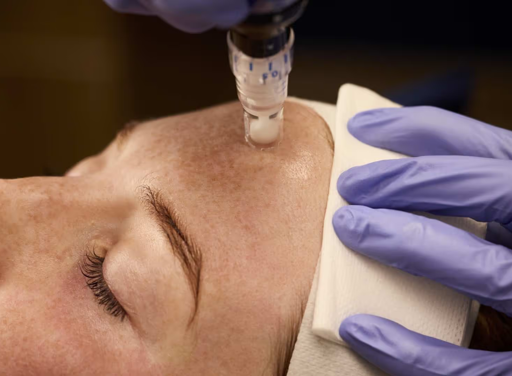

FDA-Cleared Korean-Inspired Skin Renewal for Glass Skin, Acne Scars & Texture Refinement.
The Seoul Skin Quality Philosophy
Glass Skin starts with texture. Beautiful skin is about skin health first, not aggressive resurfacing.
Korean aesthetics changed how patients think about skin rejuvenation. The goal is no longer: “Can everyone tell I had treatment?” but rather: “How does her skin always look so smooth?”
At SuA Glow Med Spa in Carrollton, SkinPen® Microneedling was selected because modern skin rejuvenation focuses on collagen support, skin barrier respect, and gradual texture refinement. Our K-Glow approach helps skin appear smoother, brighter, and naturally radiant without looking artificial or overprocessed.

Skin Texture Focus
Not all microneedling devices undergo the same regulatory review process. At SuA Glow, SkinPen® was intentionally selected because FDA-cleared technology supports:
Because healthier-looking skin should never come at the expense of skin health.
Modern Korean-inspired skin rejuvenation focuses less on aggressive trauma and more on gradual, sustainable refinement. SkinPen® is integrated into our broader philosophy to support:
Because smoother skin without healthier skin is not true luxury.
Korean beauty philosophy prioritizes skin quality before heavy correction. Rather than overprocessing the skin with aggressive treatments, the focus is on supporting skin density.
SkinPen® microneedling helps support rolling scars, boxcar scars, uneven texture, and enlarged pores by stimulating collagen production. This results in "quiet luxury" skin that looks naturally radiant and filtered in real life—meaning you still look like yourself, just with less foundation dependence and improved skin confidence.
Safe for Diverse Skin Types
SkinPen microneedling is commonly utilized across diverse skin tones, including Asian and melanin-rich skin. Our PA-C Sophia Yang prioritizes skin safety, pigmentation risk mitigation, and barrier health over aggressive treatment intensity.
 Quiet Luxury Aesthetics
Quiet Luxury Aesthetics
The Microneedling Recovery Journey
Expect temporary redness, mild warmth, tightness, or sensitivity. Most patients experience a temporary "sunburn-like" recovery for several days.
Skin cells renew quickly. Your skin will gradually begin appearing smoother, brighter, more refined, and healthier.
Collagen remodeling continues gradually over time. You will notice progressive improvements in skin quality, texture, and scars.
Depending on scar severity and aesthetic goals, many patients pursue annual or seasonal maintenance for lasting skin longevity.
Yes. SkinPen microneedling may help support improvement in certain types of acne scars (including rolling and boxcar scars) through collagen remodeling and skin texture refinement. Individual outcomes depend on scar depth, inflammation history, and skin type.
Treatment recommendations vary based on scar severity, collagen quality, and skin condition. Many patients pursue a series of 3 to 6 treatments spaced 4 weeks apart for progressive collagen support and texture refinement.
Yes, SkinPen® is FDA-cleared to treat acne scars. By triggering your body's natural collagen remodeling response, it gradually fills and smooths out the depressions left by rolling and boxcar scars.
Absolutely. Many patients seek SkinPen to soften the appearance of enlarged pores, rough texture, and post-acne irregularities. The result is a smoother-looking, more polished complexion where makeup sits significantly better.
Most patients experience temporary redness, warmth, and tightness resembling a sunburn. This typically subsides within 24 to 72 hours depending on treatment depth, skin sensitivity, and following proper clinical aftercare.
Yes. Unlike some heat-based treatments that carry risk of post-inflammatory hyperpigmentation (PIH), SkinPen microneedling uses mechanical energy, making it safe for diverse skin tones when evaluated and performed under proper medical protocols.
SkinPen focus is mechanical micro-channeling for texture, pore refinement, and acne scars. RF Microneedling combines microneedling with radiofrequency energy for deeper skin tightening and structural tissue remodeling. We help determine the best match during your clinical assessment.
Glass skin requires a smooth, light-reflective surface. Because "glass skin starts with texture," SkinPen is frequently used as a foundation to refine pores and texture. At SuA Glow, it is often paired with LDM ultrasound facials or hydration boosters for maximum glow.
Korean beauty philosophy emphasizes long-term prevention and skin barrier respect over aggressive resurfacing. Microneedling became popular because it triggers natural skin renewal, encouraging healthier-looking skin with minimal social downtime.
Most patients find the treatment very manageable. We apply a medical-grade topical numbing cream before the procedure to ensure your comfort throughout the session.
Important Transparency Statement: SkinPen treatment recommendations at SuA Glow are individualized based on patient anatomy, skin condition, goals, medical history, and clinical assessment pursuant to supervising physician-approved protocols and applicable Texas regulations. Treatment results vary by individual. No outcome can be guaranteed.
K-Beauty Medspa • Carrollton HQ